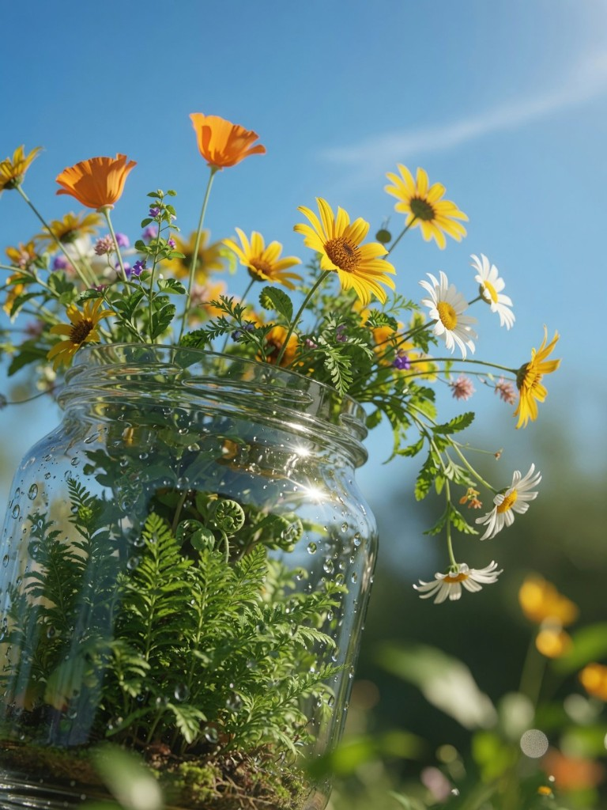
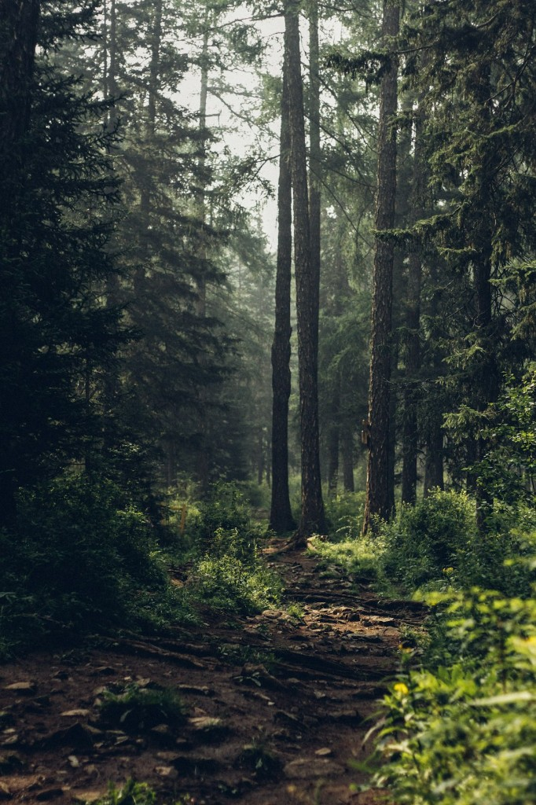

Built by Sif
Liquid glass navigation
The pill already sits over this photo. Scroll slowly — the sky, stems, and glass glints should bend through the bar (real refraction), not frosted blur.
- Caps warp the blue sky
- Stems ripple across the center
- Highlights shift at the rim

02 / Bento grid
Same glass stack, tiled over the trail
Each tile is a live lens on this forest scene — drag-scroll slowly and watch trunks and mist bend through every card.
01 / Work
Architecture
Hard lines and concrete gradients give the lens something worth bending.
 Structure
Structure
02 / Studio
Interior light
Soft interior tones show how the tint adapts without killing contrast.
 Studio
Studio
03 / About
Night city
Neon edges and skyline depth stress-test chroma at the rim.
 Urban
Urban
04 / Contact
Organic texture
Forest canopy detail keeps the refraction organic instead of mechanical.
 Nature
Nature